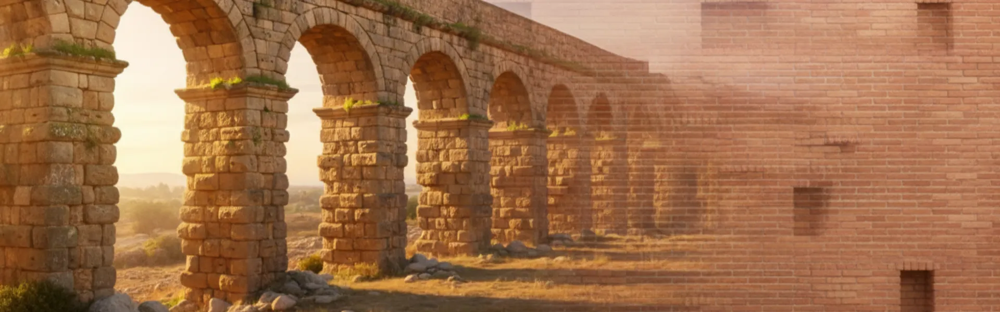
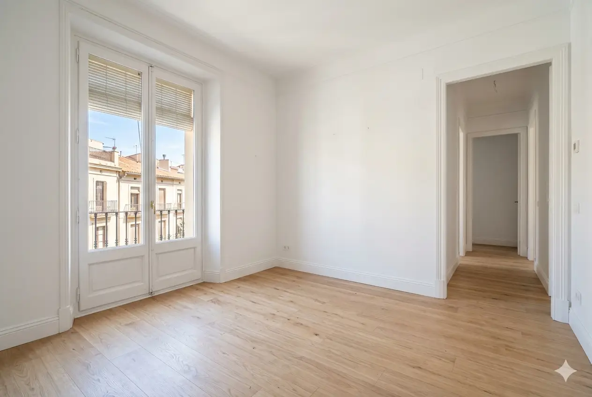
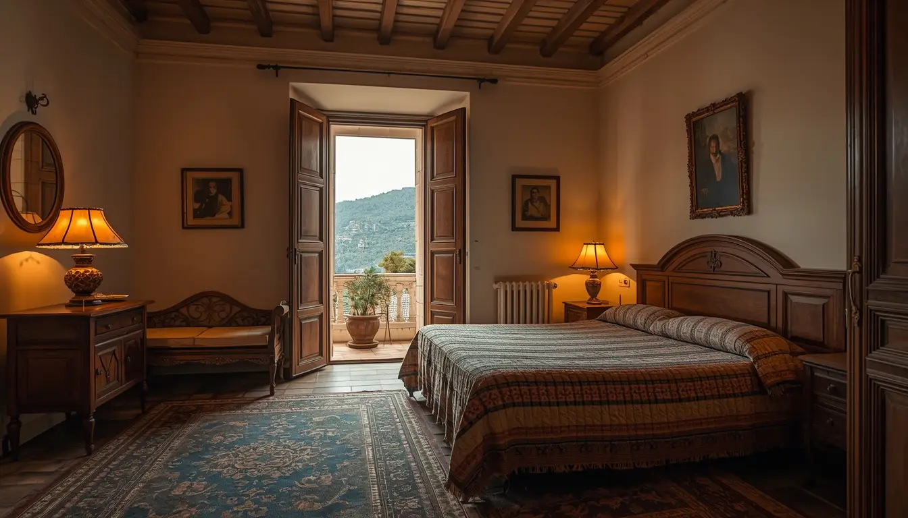
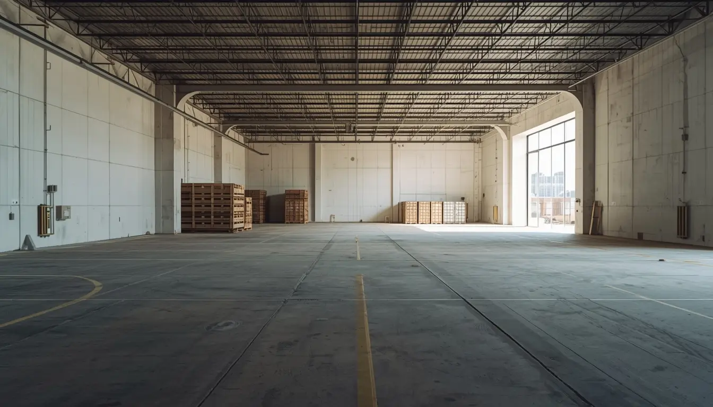
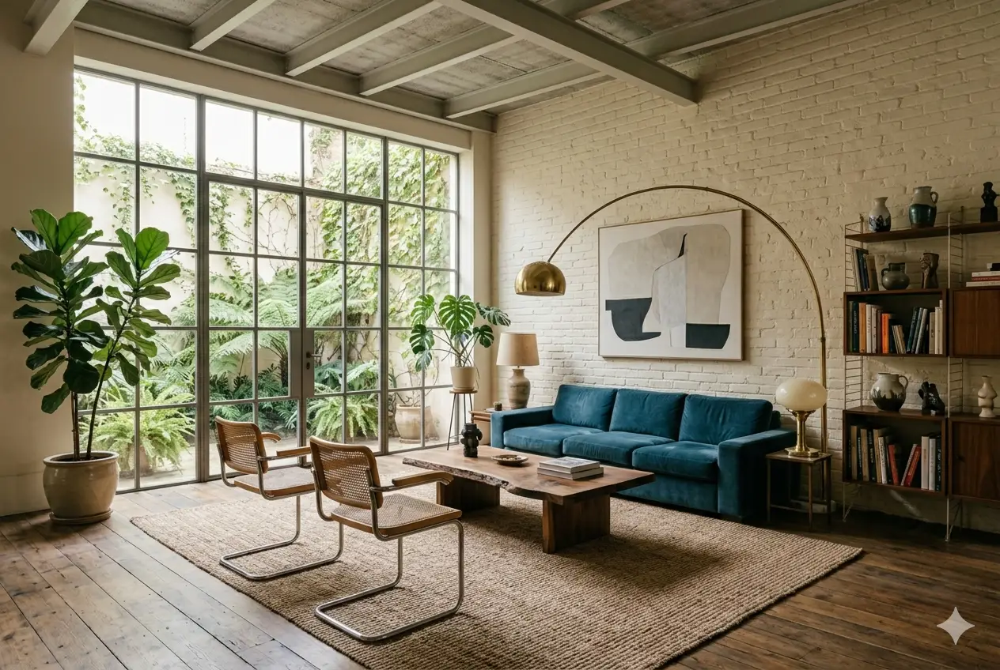

Tarragona · Reus · Camp de Tarragona · Costa Dorada
Vaciado de pisos en Tarragona y Reus
Especialistas en vaciado de pisos en la provincia de Tarragona. Servicio completo en las dos ciudades principales y en toda la comarca del Camp de Tarragona, con máxima discreción y precio cerrado.
Conocimiento especializado
Dos ciudades muy distintas, un servicio adaptado a cada una
Tarragona y Reus son ciudades con personalidades propias. La capital tiene un centro histórico protegido, la Part Alta y el Casc Antic con calles estrechas y restricciones de acceso. Reus, en cambio, es conocida por su Eixample Modernista y un centro urbano más abierto y accesible.
A esto se suma la especificidad de la Costa Dorada: Salou, Cambrils y los municipios turísticos requieren una planificación diferente, especialmente en cuanto a temporadas y gestión de apartamentos vacacionales.

Tarragona · Reus
Tarragona capital
- Casc Antic: gestión especializada en calles estrechas con restricciones de acceso y patrimonio histórico
- Part Alta: conocimiento de las normativas municipales de protección patrimonial
- Zona portuaria: coordinación con permisos especiales para la zona del puerto
- Ensanche moderno: protocolos eficientes para edificios de nueva construcción
- Coordinación municipal: relación directa con el ayuntamiento para cualquier trámite
Ciudad de Reus
- Eixample Modernista: especial cuidado en edificios con valor arquitectónico protegido
- Centro histórico: protocolos para zonas peatonales y de tráfico restringido
- Zonas residenciales: horarios adaptados para minimizar molestias a vecinos
- Accesibilidad: equipos preparados para cualquier tipo de edificio
- Gestión eficiente: conocimiento profundo de las normativas locales de Reus
Servicios
Servicios especializados en el Camp de Tarragona
Soluciones adaptadas a las necesidades de Tarragona, Reus y toda la provincia, con especial atención a las características de cada ciudad y su entorno.
Vaciado por defunción en Tarragona y Reus
Gestión sensible en momentos difíciles. Protocolos especiales para mantener la privacidad y respetar el duelo familiar en ambas ciudades, con discreción absoluta en todo el proceso.
Leer guía completaLimpieza por síndrome de Diógenes
Protocolos especializados para situaciones complejas en Tarragona y Reus. Desinfección profesional con productos hospitalarios, ozonización y gestión adecuada de residuos según normativa de la Agència de Residus de Catalunya.
Ver protocolo de limpieza DiógenesCambio de inquilinos
Soluciones rápidas para propietarios e inmobiliarias en Tarragona y Reus. Dejamos la vivienda lista para alquilar en tiempo récord, coordinando con las agencias y adaptándonos a los plazos de entrega.
Saber másApartamentos turísticos en la Costa Dorada
Especialistas en vaciado de apartamentos turísticos en Salou, Cambrils y toda la Costa Dorada. Planificamos los trabajos fuera de temporada alta y gestionamos la retirada de mobiliario específico de apartamentos vacacionales.
Saber másVaciado urgente 24h
Servicio de emergencia disponible las 24 horas en Tarragona, Reus y toda la provincia. Ideal para desahucios, entregas de llaves urgentes o situaciones imprevistas que no pueden esperar.
Saber másServicio para inmobiliarias
Soluciones profesionales para agencias inmobiliarias en Tarragona y Reus. Tarifas especiales, rapidez garantizada y coordinación perfecta para que la propiedad quede lista para visitas cuanto antes.
Saber másCasos habituales
Lo que encontramos habitualmente en la provincia
En Tarragona atendemos pisos heredados del Casc Antic que llevan años cerrados, con los retos propios de un edificio histórico: escaleras sin ascensor, calles peatonales y coordinación con el área de patrimonio municipal.
En Reus son frecuentes los vaciados en el Eixample Modernista, donde el cuidado de las fachadas y los elementos comunes es especialmente importante. También gestionamos muchos cambios de inquilino en edificios residenciales de los años 70 y 80.
En la Costa Dorada, Salou y Cambrils concentran una alta proporción de apartamentos turísticos cuyos propietarios, a menudo no residentes, necesitan un servicio completo a distancia: valoración por videollamada, ejecución coordinada y entrega con documentación.



Cobertura
Servicio en toda la provincia del Camp de Tarragona
Tarragona, Reus y todos los municipios de la provincia. Desde el centro histórico hasta la Costa Dorada y las comarcas interiores.
Salou
Especialistas en vaciado de apartamentos turísticos y segundas residencias en zona costera.
Cambrils
Servicio en zona portuaria y urbanizaciones residenciales. Coordinación con propietarios no residentes.
Valls
Conocimiento de las particularidades de las zonas rurales y municipios del interior.
Constantí · Vila-seca
Atención personalizada en municipios del área metropolitana de Tarragona.
La Canonja
Zona industrial y residencial próxima a Tarragona capital. Servicio exprés por proximidad.
Altafulla · Torredembarra
Municipios costeros con alta concentración de segunda residencia y apartamentos turísticos.
Reus y alrededores
Riudoms, Castellvell del Camp, Alcover y toda la comarca del Baix Camp.
Toda la provincia
Cobertura completa en todo el Camp de Tarragona, sin costes adicionales en la zona central.
🗑️ Deixalleria Tarragona
Puntos limpios municipales para residuos especiales y voluminosos.
Deixalleries TarragonaCómo trabajamos
Proceso sencillo, sin sorpresas
Cada ciudad del Camp de Tarragona tiene sus particularidades. Nuestro proceso está diseñado para adaptarse a ellas sin generar molestias ni retrasos.
Valoración rápida
Nos llama o rellena el formulario. En menos de 1 hora respondemos y acordamos una visita o videollamada. Funciona igual para clientes que viven fuera de la provincia.
Coordinación con zonas históricas
En Tarragona gestionamos accesos en la Part Alta y el Casc Antic. En Reus, adaptamos el trabajo a edificios modernistas y zonas peatonales. Permisos incluidos en el presupuesto.
Ejecución del vaciado
Nuestro equipo se presenta el día acordado. En Costa Dorada, trabajamos fuera de temporada alta para evitar molestias a vecinos y turistas. Siempre respetando los horarios comunitarios.
Gestión de residuos y entrega
Cumplimos con las ordenanzas municipales de Tarragona y Reus, llevando cada tipo de residuo a su punto correspondiente. Certificados de gestión incluidos. Propiedad lista para alquilar, vender o entregar.
Precios orientativos
Sin letra pequeña
Presupuesto cerrado y gratuito en menos de 24h. Los precios incluyen desplazamiento en la zona central de la provincia.
Piso 50–60m² con muebles vacíos
Piso 50–60m² con muebles y enseres
Casos de acumulación severa, desde
* Precios orientativos. Presupuesto exacto tras visita o videollamada gratuita.
¿Propietario no residente?
Muchos propietarios en la Costa Dorada viven fuera de la provincia o del país. Gestionamos el vaciado completo con videollamada, presupuesto escrito y entrega de llaves sin que tenga que desplazarse.
Clientes satisfechos
Lo que dicen nuestros clientes en el Camp de Tarragona
«Excelente servicio en el Casc Antic de Tarragona. Gestionaron todos los permisos con el ayuntamiento y trabajaron con mucha sensibilidad tras el fallecimiento de mi padre. Profesionales al 100%.»
«Necesitaba vaciar un piso en el Eixample de Reus para cambio de inquilino. Fueron increíblemente rápidos y dejaron todo impecable. Precio justo y trato excepcional. Los recomiendo para toda Reus.»
«Vaciado de apartamento turístico en Salou perfectamente coordinado. Trabajaron en temporada baja para no molestar a vecinos y gestionaron toda la logística. Muy profesionales y eficientes.»
Preguntas frecuentes
Lo que nos preguntan sobre vaciados en Tarragona y Reus
Resolvemos las dudas más comunes sobre nuestros servicios en el Camp de Tarragona.
En el Casc Antic trabajamos con permisos especiales debido a las restricciones de tráfico y al valor patrimonial. Coordinamos directamente con el ayuntamiento de Tarragona y utilizamos equipos especiales para calles estrechas y zonas peatonales, respetando siempre las normativas municipales.
Sí. Somos especialistas en vaciado de apartamentos turísticos en Salou, Cambrils y toda la Costa Dorada. Planificamos los trabajos fuera de temporada alta para minimizar molestias, coordinamos con comunidades de propietarios y gestionamos la retirada de mobiliario específico de apartamentos vacacionales.
Sí. Cubrimos eficientemente toda la provincia del Camp de Tarragona: Tarragona, Reus, Salou, Cambrils, Valls, Constantí, Vila-seca, La Canonja, Altafulla, Torredembarra y todos los municipios del entorno con el mismo nivel de profesionalidad.
La discreción es fundamental en nuestro servicio en Tarragona y Reus. En situaciones delicadas utilizamos vehículos sin identificación, trabajamos en horarios discretos y coordinamos cuidadosamente con comunidades de vecinos. Respetamos al máximo la privacidad de nuestros clientes en ambas ciudades.
Sí. Ofrecemos vaciado urgente en 24 horas en toda la provincia de Tarragona. Podemos responder rápidamente en Tarragona, Reus, Salou, Cambrils y cualquier municipio del Camp de Tarragona para situaciones imprevistas o con plazos ajustados.
Contacto
¿Necesita vaciar una propiedad en Tarragona o Reus?
Le respondemos en menos de 1 hora. Presupuesto cerrado, sin compromiso. Cobertura en toda la provincia.
Contacto directo
Teléfono
688 30 41 43Horario
Lunes–Viernes: 8:00–20:00
Sábados: 9:00–14:00
Urgencias disponibles 24h
Zona de servicio
Tarragona, Reus y toda la provincia del Camp de Tarragona.
Solicite su presupuesto gratuito
Rellene el formulario y le llamamos en menos de 1 hora con un presupuesto orientativo.
¿Necesita vaciar un piso en Tarragona, Reus o el Camp de Tarragona?
Como especialistas en vaciado en la provincia de Tarragona, ofrecemos soluciones adaptadas a cada situación con máxima discreción y eficiencia. Cobertura completa en Tarragona, Reus y toda la Costa Dorada.
Solicitar presupuesto ahora